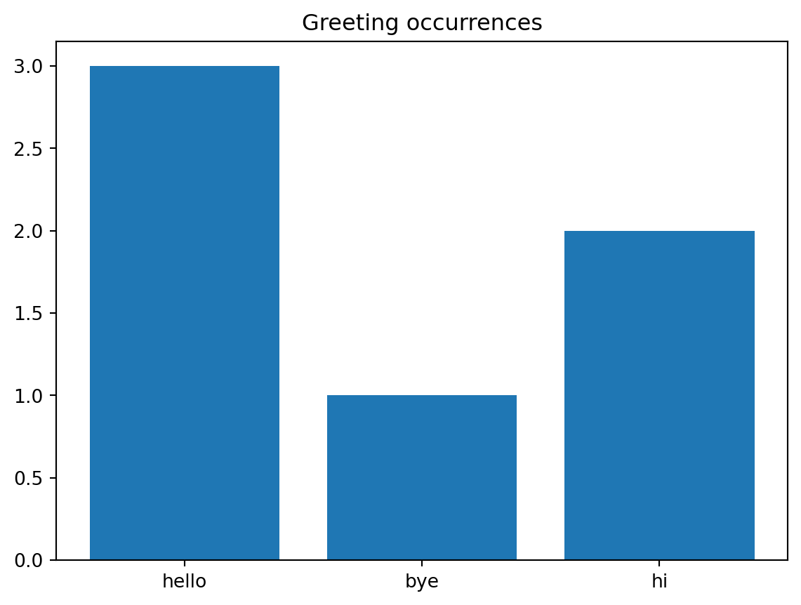

import pandas as pd9 Data handling with Pandas
In this chapter, we will go over some of the basics of importing, adjusting and exporting data in Python. For the adjusting part, we will rely on the Pandas package, which is a data analysis package. We start by explaining how to use Pandas data frames, a convenient way to store large datasets. Afterwards, we will explain how you can import data from a file into a data frame, and how to export it to another file.
The Pandas package pandas is typically imported under the alias pd.
9.1 Data frames
We will start with a small data set consisting of six persons and some personal information about these people. The data is given in the following dictionary. It contains the names, height, weight, age and dietary preference (i.e., dictionary keys) of everyone.
dataset = {
'name' : ["Aiden", "Bella", "Carlos", "Dalia", "Elena", "Farhan"],
'height (cm)' : [185, 155, 190, 185, 160, 170],
'weight (kg)' : [80, 60, 100, 85, 62, 75],
'age (years)' : [23, 23, 23, 21, 19, 25],
'dietary preference' : ['Veggie','Veggie','None','None','Vegan','None']
}
print(dataset.keys())dict_keys(['name', 'height (cm)', 'weight (kg)', 'age (years)', 'dietary preference'])A dictionary is not a convenient datatype to perform data analysis on. Therefore, we load the data into a so-called dataframe using the DataFrame() function from pandas.
data_frame = pd.DataFrame(dataset)
print(data_frame) name height (cm) weight (kg) age (years) dietary preference
0 Aiden 185 80 23 Veggie
1 Bella 155 60 23 Veggie
2 Carlos 190 100 23 None
3 Dalia 185 85 21 None
4 Elena 160 62 19 Vegan
5 Farhan 170 75 25 NoneAs you can see here, the keys of the dictionary become the column names of the data frame, and the values are stored in the corresponding column. You can also see the index of the row at the far left. Because we have a relatively small data set, the complete data frame is printed. If the data contains a large number of rows, typically the first and last five rows are printed in the console of Spyder. A data frame is an object of the type DataFrame with which you can do all kinds of things.
print(type(data_frame))<class 'pandas.core.frame.DataFrame'>9.1.1 Accessing
If you want to print the first or last k rows, you can use the functions frame_name.head(k) and frame_name.tail(k), respectively, with frame_name the name of the data frame.
# Print first three rows of data_frame
print(data_frame.head(3)) name height (cm) weight (kg) age (years) dietary preference
0 Aiden 185 80 23 Veggie
1 Bella 155 60 23 Veggie
2 Carlos 190 100 23 None# Print last two rows of data_frame
print(data_frame.tail(2)) name height (cm) weight (kg) age (years) dietary preference
4 Elena 160 62 19 Vegan
5 Farhan 170 75 25 NoneIt is also possible to access specific rows or elements from the data frame using indexing.
To extract row i, use frame_name.loc[i].
# Extract row 0 (i.e., info of Aiden)
x = data_frame.loc[0]
print(x)name Aiden
height (cm) 185
weight (kg) 80
age (years) 23
dietary preference Veggie
Name: 0, dtype: objectTo extract a specific column, use frame_name.loc[:,'column_name'].
# Extract age column (i.e., info of Aiden)
x = data_frame.loc[:,'age (years)']
print(x)0 23
1 23
2 23
3 21
4 19
5 25
Name: age (years), dtype: int64An alternative that not uses the loc[] function is frame_name[column_name].
# Extract age column (i.e., info of Aiden)
x = data_frame['age (years)']
print(x)0 23
1 23
2 23
3 21
4 19
5 25
Name: age (years), dtype: int64To extract from row i the entry in column ‘column_name’ use frame_name.loc[i,column_name].
# Extract the name and height from the person on row 0
x = data_frame.loc[0,'name']
y = data_frame.loc[0,'height (cm)']
print("The height of", x, "is", y, "cm.")The height of Aiden is 185 cm.We can also use slicing to return a specified range of rows. For example, rows i through j can be obtained using frame_name.loc[i:j].
# Extract first three rows
x = data_frame.loc[1:3]
print(x) name height (cm) weight (kg) age (years) dietary preference
1 Bella 155 60 23 Veggie
2 Carlos 190 100 23 None
3 Dalia 185 85 21 NoneA notable different with slicing in lists is that if we want the first, second AND third element of a list then we use [1:4]. This is because the last element of the specified range (4 in this case) is not included when using slicing in lists.
# Slicing in list
y = [13,4,5,2,11]
# Print first, second and third element of y
print(y[1:4])[4, 5, 2]Using slicing, we can also access specific combinations of columns and rows. Suppose we are only interested in the name, height and age of the first, second and third person in the frame. Because the columns have names (i.e., are not numbers), we index them by a list containing the colunmn names that we are interested in.
# Extract block with rows 1-3 and columns name, height and age.
x = data_frame.loc[1:3,['name','height (cm)', 'age (years)']]
print(x) name height (cm) age (years)
1 Bella 155 23
2 Carlos 190 23
3 Dalia 185 21It is also possible to return a subset of rows that do not form a consective block. You can do this with a Boolean vector indicating for every row whether you want it to be included or not. For example, if we want to return only rows 0, 1, 4 and 5, we can do the following:
rows = [True,True,False,False,True,True]
x = data_frame.loc[rows]
print(x) name height (cm) weight (kg) age (years) dietary preference
0 Aiden 185 80 23 Veggie
1 Bella 155 60 23 Veggie
4 Elena 160 62 19 Vegan
5 Farhan 170 75 25 NoneHere rows is a Boolean list containing entries True and False with an element being True if and only if we want the row to be included (namely 0,1,4 and 5), and False otherwise (namely 2 and 3). We can achieve the same result with data_frame.loc[[0,1,4,5]], i.e, by giving a list of the row entries that we are intersted in.
The Boolean list approach is convenient, because it can also be used to select rows that satisfy a specified criterion. For example, suppose that we want to only select the rows of persons whose dietary preference is ‘None’. This can be achieved as follows.
# Boolean vector no_pref indicating whether dietary preference is 'None'
no_pref = data_frame['dietary preference'] == 'None'
print(no_pref)0 False
1 False
2 True
3 True
4 False
5 True
Name: dietary preference, dtype: bool# Extract rows for which list no_pref has 'True' entry
x = data_frame.loc[no_pref]
print(x) name height (cm) weight (kg) age (years) dietary preference
2 Carlos 190 100 23 None
3 Dalia 185 85 21 None
5 Farhan 170 75 25 NoneThe expression data_frame['Dietary preference'] == 'None' checks for every row in the dietary preference column data_frame['Dietary preference'] whether its entry is ‘None’. If so, it returns True, and otherwise False. We store these True/False values in the list no_pref (short for having no dietary preference). We then use this Boolean list to extract the rows of the data frame consisting of the persons whose dietary preference is None.
9.1.2 Editing
It is also possible to edit the data frame, both the data in the frame, as well as the column and row names. For example, it might be that we start with data that is not given in a dictionary, but rather in a matrix (which is a list of lists, where each of the inner lists forms a row of the matrix).
data = [
[2,4,-1,2],
[5,1,2,9],
[3,7,8,9]
]
frame = pd.DataFrame(data)
print(frame) 0 1 2 3
0 2 4 -1 2
1 5 1 2 9
2 3 7 8 9Note that in this case both the rows and columns have their index number as name, so 0,1 and 2 for the rows and 0, 1, 2 and 3 for the columns. The names of the rows are stored in frame_name.index and the columns in frame_name.columns.
# Row names are stored in frame.index
print(frame.index)RangeIndex(start=0, stop=3, step=1)# Rename rows
frame.index = ['Row0','Row1','Row2']
# Access the row names
print(frame.index)Index(['Row0', 'Row1', 'Row2'], dtype='object')If you want to access specific column names, you can use indexing.
# Print name of first column
print(frame.index[1])Row1Here is the complete frame with row names adjusted.
# Print data frame
print(frame) 0 1 2 3
Row0 2 4 -1 2
Row1 5 1 2 9
Row2 3 7 8 9Next, let us adjust the colum names.
frame.columns = ['Col0','Col1','Col2','Col3']
print(frame) Col0 Col1 Col2 Col3
Row0 2 4 -1 2
Row1 5 1 2 9
Row2 3 7 8 9It is also possible to alter the entries within the frame.
# Edit entry on row 1, column 2
frame.loc['Row1','Col2'] = 10
print(frame) Col0 Col1 Col2 Col3
Row0 2 4 -1 2
Row1 5 1 10 9
Row2 3 7 8 9You can also edit a complete row (or column)
# Replace row 2
frame.loc['Row2',:] = [-2,-2,-2,-2]
print(frame) Col0 Col1 Col2 Col3
Row0 2 4 -1 2
Row1 5 1 10 9
Row2 -2 -2 -2 -2# Replace column 2
frame.loc[:,'Col2'] = [-1,-1,-1]
print(frame) Col0 Col1 Col2 Col3
Row0 2 4 -1 2
Row1 5 1 -1 9
Row2 -2 -2 -1 -2It is also possible to edit the entries of an entire column by applying a function to it using apply(). For example, suppose that we want to square all the numbers in the second column. We can do this as follows.
def f(x):
return x**2
# frame['Col1'].apply(f) does not overwrite the entries in Col1
# so we have to do this ourselves
frame['Col1'] = frame['Col1'].apply(f)
print(frame) Col0 Col1 Col2 Col3
Row0 2 16 -1 2
Row1 5 1 -1 9
Row2 -2 4 -1 -29.1.3 Adding data
It is also possible to add entire new rows and columns.
data = [
[2,4,-1,2],
[5,1,2,9],
[3,7,8,9]
]
# Create frame out of data
frame = pd.DataFrame(data)
# Name rows and columns
frame.columns = ['Col0','Col1','Col2','Col3']
frame.index = ['Row0','Row1','Row2']
print(frame) Col0 Col1 Col2 Col3
Row0 2 4 -1 2
Row1 5 1 2 9
Row2 3 7 8 9Next, we add a row to the data frame. The loc[] command uses for this adds the row at the bottom of the current data frame.
# Add a row
frame.loc['New row'] = [5,5,3,1]
print(frame) Col0 Col1 Col2 Col3
Row0 2 4 -1 2
Row1 5 1 2 9
Row2 3 7 8 9
New row 5 5 3 1The same holds for adding a column, which is done as follows. Note that here we use [:,'New column'] and not ['New column'], because the latter would add the new data as a row.
frame.loc[:,'New column'] = [1,1,1,1]
print(frame) Col0 Col1 Col2 Col3 New column
Row0 2 4 -1 2 1
Row1 5 1 2 9 1
Row2 3 7 8 9 1
New row 5 5 3 1 1Adding a new column you can also do with the insert() function. This allows you to specify at which position you want the column to be inserted. The insert() function needs three arguments: a position i where the column should be inserted, the column name and the column data, so the syntax is something like instert(i,column_name,column_data).
# Insert column with name 'New column' at position 2.
frame.insert(2,'Inserted column', [10,10,10,10])
print(frame) Col0 Col1 Inserted column Col2 Col3 New column
Row0 2 4 10 -1 2 1
Row1 5 1 10 2 9 1
Row2 3 7 10 8 9 1
New row 5 5 10 3 1 1Adding a row at a specific position is also possible, but this is more involved and omitted here.
9.2 Mathematical operations
It is also possible to obtain statistical information from numerical columns.
data = [
[2,4,-1,2,'hello'],
[5,1,2,9,'bye'],
[3,7,8,9,'hello'],
[3,5,8,9,'hi'],
[31,5,4,9,'hi'],
[3,7,8,5,'hello'],
]
# Create frame out of data
frame = pd.DataFrame(data)
# Name rows and columns
frame.columns = ['Col0','Col1','Col2','Col3','Col4']
frame.index = ['Row0','Row1','Row2','Row3','Row4','Row5']
print(frame) Col0 Col1 Col2 Col3 Col4
Row0 2 4 -1 2 hello
Row1 5 1 2 9 bye
Row2 3 7 8 9 hello
Row3 3 5 8 9 hi
Row4 31 5 4 9 hi
Row5 3 7 8 5 helloFor example, we can compute the minimum, maximum and average value by using the function min(), max() and mean(), respectively.
# Minimum of the first column
min_col1 = frame.loc[:,'Col1'].min()
print(min_col1)1# Maximum of the second column
max_col2 = frame.loc[:,'Col2'].max()
print(max_col2)8# Mean of the zeroth column
mean_col0 = frame.loc[:,'Col0'].mean()
print(mean_col0)7.833333333333333It is also possible to count occurences of a given word (or number) using value_counts()[word]. For example, suppose we want to count how often the word 'hello' appears in the third column.
count_hello = frame.loc[:,'Col4'].value_counts()['hello']
print(count_hello)3We can also to more advanced things like counting the total number of occurrences of every word in the fourth column. By having a quick look at the data, we see that there are three distinct greetings, 'hello', 'hi' and 'bye', to be found in the fourth column. A quick way to obtain these greetings in a list is to use the unique() function. This function returns a list with all the unique entries found in the specified column.
greetings = frame.loc[:,'Col4'].unique()
print(greetings)['hello' 'bye' 'hi']Next, we can loop over the greetings in the list greetings and apply the value_counts() function to all of them. We store the results in a dictionary whose keys are the greetings in greetings and whose values are the number of times every greeting appears in the fourth column.
# Create empty dictionary
occur_count = {}
for i in greetings:
occur_count[i] = frame.loc[:,'Col4'].value_counts()[i]
print(occur_count){'hello': 3, 'bye': 1, 'hi': 2}It is usually insightful to visualize your data as well. In this case we can make a bar plot using the bar() function of matplotlib.pyplot. It takes as input two lists (or arrays), the first list being the labels that should appear under the bars, and the second list the heights of the bars.
import matplotlib.pyplot as plt
# Labels of the bars (keys of dictionary occur_count)
labels = occur_count.keys()
print(labels)
# Heights of the bars (values of dictionary occur_count)
values = occur_count.values()
print(values)
# Create figure
plt.figure()
# Create bar plot
plt.bar(labels,values)
#Create title for plot
plt.title('Greeting occurrences')dict_keys(['hello', 'bye', 'hi'])
dict_values([3, 1, 2])Text(0.5, 1.0, 'Greeting occurrences')
9.3 Importing and exporting data
Data is typically provided in an external file, for example, a comma-separated values (CSV) file. You can download the data that was given at the beginning of this section here in and you should store in under the name dataset.csv.
csv_to_frame = pd.read_csv('dataset.csv')
print(csv_to_frame) name height (cm) weight (kg) age (years) dietary preference
0 Aiden 185 80 23 Veggie
1 Bella 155 60 23 Veggie
2 Carlos 190 100 23 None
3 Dalia 185 85 21 None
4 Elena 160 62 19 Vegan
5 Farhan 170 75 25 None
6 Geert 178 80 25 VeggieTo test the code above in Spyder, you need to store the Python file that you execute the code in, in the same folder as the file dataset.csv.
The function read_csv stores the data in the file dataset.csv. The first row of the data is assumed to contain the names of the columns. If the data file does not contain such a first row, we can import the data with the additional argument header=None, meaning that we tell Python that there is no first row containing the column names.
csv_to_frame = pd.read_csv('dataset.csv', header=None)
print(csv_to_frame) 0 1 2 3 4
0 name height (cm) weight (kg) age (years) dietary preference
1 Aiden 185 80 23 Veggie
2 Bella 155 60 23 Veggie
3 Carlos 190 100 23 None
4 Dalia 185 85 21 None
5 Elena 160 62 19 Vegan
6 Farhan 170 75 25 None
7 Geert 178 80 25 VeggieNote that in the code above, the first row of the data is now included in the data frame, instead of set to be the names of the columns. The columns are now indexed by integers like the rows of the frame.
It is also possible to export an (adjusted) data frame to a comma-separated file. Let us first add another row to the existing frame and then export it to a new file called new_dataset.csv.
frame = pd.read_csv('dataset.csv')
# Highest index in original frame is 5, so 6 is the index
# at which we place the new row
frame.loc[6] = ['Geert',178, 80, 25, 'Veggie']
print(frame) name height (cm) weight (kg) age (years) dietary preference
0 Aiden 185 80 23 Veggie
1 Bella 155 60 23 Veggie
2 Carlos 190 100 23 None
3 Dalia 185 85 21 None
4 Elena 160 62 19 Vegan
5 Farhan 170 75 25 None
6 Geert 178 80 25 VeggieNow that we have added a new row, we can use the to_csv() function tho store the frame in the new comma-separated file.
frame.to_csv('new_dataset.csv')The folder in which you have stored the original dataset.csv file, as well as the Python file in which the code is executed, should now contain a new file called new_dataset.csv. If you open the file in, e.g., Notepad (Windows) or Excel, you will see something like the following figure.

On the first line the column names can be found, and on the following lines the data from the frame. However, Python also exported the row indices 0,1,\dots,6. If you don’t want these indices to be included (they were also not contained in the original .csv file), you can use the argument index=False in to_csv().
frame.to_csv('new_dataset_no_indices.csv', index=False)This time the resulting file does not have the row indices at the beginning of every line.

Instead of storing the data in a new file, we can also overwrite the original dataset.csv file.
frame.to_csv('dataset.csv',index=False)You should, however, be careful with overwriting files in this way. Always make sure you have a copy of the data stored somewhere else, in case something goes wrong!